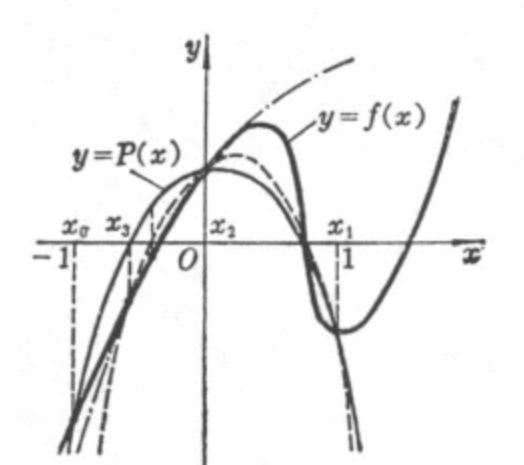
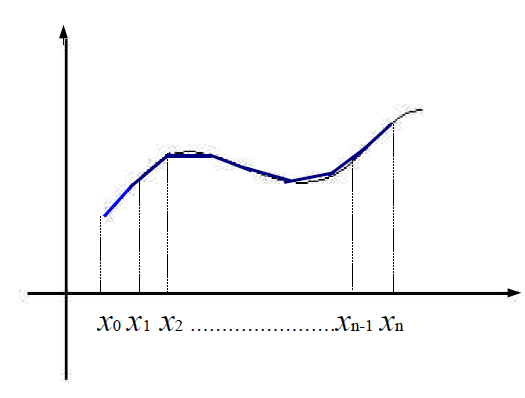

爱的深处不正涌流着企图和对方分毫不差的这种不可能实现的热望吗？这种热望不正驱使着人们将不可能由另一极端变成可能，从而引导他们走向那种悲剧性的叛离之路吗？既然相爱的人不可能完全相似，那么不如干脆使他们致力于相互之间毫不相似，使这样的叛离完整地作用于媚态。
第一章 相关基础数学知识
Theorem: If the function $f$ is differentiable at $x_0$, then $f$ is continuous at $x_0$.
Notation: $C[a,b]$ stands for the set of continuous function defined in $[a,b]$.
Theorem (Generalized Rolle’s Theorem): Suppose $f\in C[a,b]$ is $n$ times differentiable on $(a,b)$. If $f(x)$ is zero at the $n+1$ distinct numbers $x_0,x_1,…,x_n$ in the $[a,b]$, then a number $c$ in the $(a,b)$ exists with $f^{(n)}(c)=0$
Theorem (Taylor’s Theorem): $f(x)=P_n(x)+R_n(x)$, $P_n(x)=\sum_{k=0}^n\frac{f^{(k)}(x)}{k!}(x-x_0)^{k}$, $R_n(x)=\frac{f^{(n+1)(\xi(x))}}{(n+1)!}(x-x_0)^{n+1}$. $\xi(x)$ is between $x$ and $x_0$.
Definition: If $p^$ is an approximation to $p$, the absolute error is $|p-p^|$, and the relative error is $\frac{|p-p^*|}{|p|}$, provided that $p\neq 0$.
Definition: The number $p^$ is said to approximate $p$ to $t$ significant digit if $t$ is the largest nonnegative integer for which $\frac{|p-p^|}{|p|}<5\times 10^{-t}$.
Definition: An algorithm is said to be stable when small changes in the initial data can produce correspondingly small changes in final results. Some algorithm are stable only for certain choices of initial data, these cases are called conditionally stable.
Definition: Suppose that $E_0$ denotes an initial error and $E_n$ represents the magnitude of an error after $n$ subsequent operations.
If $E_n\approx nCE_0$, where $C$ is a constant independent of $n$, then the growth of error is said to be linear.
If $E_n\approx C^nE_0$, for some $C>1$, then the growth of error is said to be exponential.
Definition: Suppose $\{\beta_n\}^{\infty}_{n=1}$ is a sequence known to converge to zero, and $\{\alpha_n\}^{\infty}_{n=1}$ converges to a number $\alpha$.
- If a positive constant $K$ exists with $|\alpha_n-\alpha|\leq K|\beta_n|$ for large n, then we say that $\{\alpha\}^\infty_{n=1}$ converges to $\alpha$ with the rate of convergence $O(\beta_n)$, writing $\alpha_n=\alpha+O(\beta_n)$.
Property (Operator errors):
- $\alpha_n+\beta_n=\alpha+\beta+O(\varepsilon_\alpha+\varepsilon_\beta)$.
- $\alpha_n\beta_n=\alpha\beta+\alpha O(\varepsilon_\beta)+\beta O(\varepsilon_\alpha)+O(\varepsilon_\alpha\varepsilon_\beta)$.
Example: $\alpha_n=\frac{n+1}{n^2},\beta_n=\frac{1}{n}$. $|\alpha_n-0|<\frac{n+n}{n^2}=2\times\frac{1}{n}$. So $\alpha_n=0+O(\frac{1}{n})$.
Definition: Suppose
If a positive constant $K$ exists with $|F(x)-L|\leq K|G(x)|$, then we write $F(x)=L+O(G(x))$.
Example: $cos(x)+\frac{1}{2}x^2=1+O(x^4)$.
Definition: A mathematical problem is said to be well-posed if a solution:
- exists,
- is unique,
- depends continuously on input data
Otherwise, the problem is ill-posed.
第二章 一元方程的近似解
Definition: The system of $m$ nonlinear equations in $n$ unknowns can alternatively be represented by defining a function $f$, mapping $\mathbb{R}^n$ into $\mathbb{R}^m$ by
The function $f_1,f_2,..,f_m$ are the coordinate functions of f.
The function f is continuous at $x_0\in D$ provided $\lim_{x\rightarrow x_0}\textbf{f}(\textbf{x})=\textbf{f}(\textbf{x}_0)$.
Theorem: Let $f$ be a function from $D\subset \mathbb{R}^n$ into $\mathbb{R}$ and $x_0\in D$. If
whenever $|x_j-x_{0j}|\leq\delta$, then $f$ is continuous at $\textbf{x}_0$.
Bisection (Binary search).
Theorem: Suppose that $f\in C[a,b]$ and $f(a)f(b)<0$. The Bisection method generates a sequence $\{p_n\}^\infty_1$ approximating a zero point $p$ of $f$ ($f(p)=0$) with
So $p_n=p+O(\frac{1}{2^n})$.
Fixed Point Method
Definition: Fixed point of given function $g:\mathbb{R}\rightarrow\mathbb{R}$ is value $x^$ such that $x^=g(x^*)$
For given equation $f(x)=0$, there may be many equivalent fixed point problems $x=g(x)$ with different choices for g.
Example: $f(x)=0\Leftrightarrow g(x)=x$, we can choose $g(x)=x-f(x)$ or $g(x)=x+3f(x)$.
To approximate the fixed point of a function $g(x)$, we choose an initial approximation $p_0$, and generate the sequence by:
If the sequence converges to $p$ and $g(x)$ is continuous, then we have
This technique is called fixed point iteration (or functional iteration).
Theorem: If $g(x)\in C[a,b]$ and $g(x)\in[a,b]$ for all $x\in[a,b]$, then $g(x)$ has a fixed point in $[a,b]$. What’s more, if $g’(x)$ exists on $(a,b)$ and a positive constant $k<1$ exists with $|g’(x)|\leq k$ for all $x\in(a,b)$, then the fixed point is unique.
- The proof is easily obtained by proof by contradiction considering the geometric feature.
Corollary: Obviously we have $p_n-p=|g(p_{n-1})-g(p)|=|g’(\xi)||p_{n-1}-p|$ where $\xi\in(a,b)$. So $|p_n-p|\leq k^n|p_0-p|$. If $k<1$, the fixed point is unique and we have $p_n=p+O(k^n)$.
What’s more, $|p_n-p|\leq k^n|p_0-p|\leq k^nmax(p_0-a,b-p_0)$, and
Newton’s Method
Suppose that $f\in C^2[a,b]$ and $x^$ is a solution for $f(x)=0$. Let $\bar{x}\in[a,b]$ e an approximation to $x^$ such that $f’(\bar{x})\neq 0$ and $|\bar{x}-x^*|$ is very small. Due to the Taylor polynomial:
where $\xi$ lies between $x$ and $\bar{x}$. So
Theorem: Let $f\in C^2[a,b]$, if $p\in[a,b]$ is such that $f(p)=0$ and $f’(p)\neq 0$, then there exists a $\delta>0$ such that for any $p_0\in[p-\delta,p+\delta]$, $p_n=p_{n-1}-\frac{f(p_{n-1})}{f’(p_{n-1})}$ converges to $p$.
- The proof is based on the fixed point iteration $g(x)=x-\frac{f(x)}{f’(x)}$.
Secant Method
Similar to Newton’s method:
Method of False Position
Improved Secant Method. If $f(p_0)f(p_1)<0$, we can chose:
dependent on $f(p_{n-1})f(p_{n-2})<0$ or $f(p_{n-1})f(p_{n-3})<0$.
Line1 across $(p_{n-1},f(p_{n-1}))$, $(p_{n-2},f(p_{n-2}))$.
Line2 across $(p_{n-1},f(p_{n-1}))$, $(p_{n-3},f(p_{n-3}))$.
We can choose which line to use by where zero point locates: $[p_{n-2},p_{n-1}]$ or $[p_{n-1},p_{n-3}]$.
Error Analysis for Iteration
Definition: If positive constants $\lambda$ and $\alpha$ exists with
then $\{p_n\}^\infty_{n=0}$ converges to $p$ of order $\alpha$, with asymptotic error constant $\lambda$.
Higher the order is, more rapidly the sequence converges.
Fixed point method
Theorem: If $|g’(x)|\leq k<1$ for any $x\in(a,b)$, then the fixed point iteration converges linearly to the unique fixed point.
- Proof:
So $\alpha=1$。If $g’(p)=0$, then the order might be higher.
What’s more, if $g’(p)=0$ and $|g’’(p)|\leq M$, then we have:
So $\alpha=2$ if the $g’’(x)$ has a bound.
If $|g’(p)|>1$, then the iteration diverges with any starting point other than p.
From Root to Fix point
For root finding problem $f(x)=0$, we let $g(x)$ be in the form
so $g(x)=x\Rightarrow f(x)=0$.
Since $g’(x)=1-\phi’(x)f(x)-\phi(x)f’(x)$, let $x=p$, $g’(p)=1-\phi(p)f’(p)$, and $g’(p)=0$ if and only if $\phi(x)=\frac{1}{f’(p)}$,
Definition: A solution $p$ of $f(x)=0$ is a zero of multiplicity $m$ of $f(x)$ if for $x\neq p$, we can write
when it comes to Newton’s method, $g(x)=x-f(x)/f’(x)$, we have
注：这里我存疑，因为都是极限意义下，$x=p$时$g(x)$甚至无定义。
但这是数值计算，实际中$x$和$p$总有点差值的。
Aitken’s Δ2 Method
Suppose $\{p_n\}^\infty_n=0$ is a linearly convergent sequence ($\alpha=1$) with limit $p$:
So when n is large enough:
Aitken’s $\Delta^2$ method is to define a new sequence:
$\{q_n\}^\infty_{n}$ will converge to $p$ more rapidly than $\{p_n\}$。
Definition: The forward difference $\Delta p_n$ of a sequence $\{p_n\}^\infty_n$ is defined by:
So $q_n=p_n-\frac{(\Delta p_n)^2}{\Delta^2p_n}$.
Theorem: $\lim_{n\rightarrow\infty}\frac{q_n-p}{p_n-p}=0$, so $q_n$ converges faster than $p_n$.
Steffensen’s Method (Aitken’s Method for fixed point iteration)
Repeat:
Theorem: If $g’(p)\neq 1$, and there exists a $\delta>0$ such that $g\in C^3[p-\delta,p+\delta]$, then Steffensen’s method gives a quadratic ($\alpha=2$) convergence for any $p_0\in[p-\delta,p+\delta]$.
Zeros of Polynomials and Muller’s Method
Find the root of given polynomial:
initially we have three points: $(x_0,f(x_0)),(x_1,f(x_1)),(x_2,f(x_2))$, then we draw a parabola across the three points:

There are two meeting points of x-axis and the parabola, we choose the one which is closer to $x_2$ as $x_3$, and repeat the iteration to draw parabola across $(x_1,f(x_1)),(x_2,f(x_2)),(x_3,f(x_3))$.
When $|x_{n+1}-x_n|<\varepsilon$, the iteration terminates. and we’ve found the root.
第三章 差值和多项式拟合
Theorem (Weierstrass Approximation Theorem): Suppose $f$ is defined and continuous on $[a,b]$, for each $\varepsilon>0$, there exists a polynomial $P(x)$ defined on $[a,b]$, with the property that:
the n-th Lagrange Interpolating Polynomial
Theorem: Suppose $x_0,x_1,..,x_n$ are distinct numbers in the interval $[a,b]$ and $f\in C^{n+1}[a,b]$, then for each $x\in[a,b]$, a number $\xi(x)\in(a,b)$ exists with
Where $P_n(x)$ is the Lagrange Interpolating polynomial.
The error is related to $h=|b-a|$. If $|f^{(n+1)}|\leq M_{n+1}$, then:
Runge Phenomenon: when $n$ is bigger, the difference between function and polynomial is larger.
Data Approximation and Neville’s Method
Theorem: Consider $n$ points: $x_1,x_2,…,x_n$, and Lagrange polynomial:
Then $P(x)=\frac{(x-x_j)P_1(x)-(x-x_i)P_2(x)}{x_i-x_j}$.
So the Lagrange Polynomial can be generate recursively.
Divided Difference
Definition: The zeroth divided difference of the function $f$ with respect to $x_i$, denoted $f[x_i]$, is simply the value of $f$ at $x_i$:
while the first divided difference of $f$ is defined as
the second divided difference is
Theorem: $P_n(x)$ can be rewritten as
which is known as Newton’s interpolatory divided difference formula.
Theorem: a number $\xi$ exists in $(a,b)$ with
Definition: the forward difference is defined by:
if $\forall i,x_{i+1}-x_i\equiv h$ and $x=x_0+sh$, then
The formula is named as Newton Forward Difference Formula.
Definition: the backward difference is defined by:
So we have
The formula is named as Newton Backward Difference Formula.
Hermite Interpolation
Problem: Given $n+1$ distinct numbers $x_0,x_1,…,x_n$ and non-negative integers $k_0,k_1,…,k_n$, to construct the osculating polynomial approximating a function $f\in C^m[a,b]$ where $m=max(k_0,k_1,…,k_n)$.
The osculating polynomial $H(x)$ requires:
Obviously the degree of this osculating polynomial is at most $K=\sum_{i=1}^nk_i+n$.
since the number of equation to be satisfied is $K+1$.
if $k_0=k_1=…=k_n$, then the Hermite polynomial is:
the error is
Piecewise Interpolation Linear Polynomial
Instead of constructing a high-degree polynomial to approximate the function, we can construct several segments:

First construct the base function:
Then the piecewise interpolation linear polynomial is:
the error bounds is:
where $h=max(x_{i+1}-x_i)$, $M=max|f’’(x)|$.
When considering the osculating polynomial and $k_0=k_1=…=k_n=1$, we can construct:
where
第四章 数值微分和数值积分
Formula:
(n+1)-Point Formula
note that $f’(x)$ is only meaningful when $x=x_0,x_1,…,x_n$.
when $n=2$ and $x_1=x_0+h,x_2=x_0+2h$:
By Taylor polynomial, we have
Therefore:
Suppose $f^{(4)}$ is continuous, then there exists $\xi\in[x_0-h,x_0+h]$ satisfying
So
Richardson’s Extrapolation
Suppose that for each number $h\neq 0$ we have a formula $N(h)$ that approximates an unknown value $M$ and that the truncation error involved with the approximation has the form:
Then we have
Therefore
let $N_2(h)=2N(\frac{h}{2})-N(h)$, then
In general, if $M$ can be written in the form:
then
Numerical Integration
let $I_n(f)=\sum_{i=0}^na_if(x_i)$, $E_n(f)=\frac{1}{(n+1)!}\int_a^bf^{(n+1)}(\xi)\prod_{i=0}^n(x-x_i)dx$.
- when $n=1$, we have the trapezoidal rule:
- when $n=2$, we have the Simpson’s rule:
Degree of Accuracy
Definition: The degree of accuracy (precision) of a quadrature formula is the largest positive integer $n$ such that the formula is precise for $P(x)=x^n$.
For example, Simpson’s rule is accurate for $\int x^3dx$ in that $P^{(4)}(x)\equiv 0$, so the error is zero.
Newton-Cotes formula
Close Newton-Cotes formula:
when $n=0$ we have the trapezoidal rule.
when $n=1$ we have the Simpson’s rule.
Open Newton-Cotes formula:
- when $n=0$, we have the Midpoint rule:
- when $n=1$:
The difference between open Newton-Cotes formula and close Newton-Cotes formula is the choice of $x_0,…,x_n$. For close case, $x_0=a$ and $x_n=b$, $h=\frac{b-a}{n}$ and $x_i=x_0+ih$. For open case, $x_0=a+h,x_n=b-h,h=\frac{b-a}{n+2}$ and $x_i=x_0+ih$. So the difference is whether $a,b$ are involved.
Composite Rule
The idea is to divide the interval $[a,b]$ into $n$ subintervals:
The formula above is the composite Simpson’s rule. The composite trapezoidal rule is just similar to Simpson’s rule. And we have composite mid point rule and so on.
Adaptive Quadrature Method
The basic idea of adaptive quadrature method is to estimate the error of Simpson’s rule, if the error is beyond tolerance, then we divide the interval into two separate subintervals and apply the Simpson’s rule each.
If we view the interval as a whole:
If we divide the interval evenly:
The error estimation is derived by assuming that $\xi\approx\hat{\xi}$, or $f^{(4)}(\xi)\approx f^{(4)}(\hat{\xi})$.
The success of the technique depends on the accuracy of this assumption! (If $b-a$ is small enough, then $\xi\approx\hat{\xi}$)
So we have the estimation of error:
The method is to divide the interval if the estimation of error is beyond tolerance.
Gaussian Quadrature
Definition: Legendre polynomials are a collection $\{P_0,P_1(x),…,P_n(x),…\}$
- for each $n$, $P_n(x)$ is a polynomial of degree $n$.
- $\int_{-1}^1P(x)P_n(x)dx=0$ if $P(x)$ is a polynomial of degree $< n$.
The first few Legendre polynomials are
How to derive Legendre polynomial is quite simple:
fine, that seems not that simple. We need to solve the equation system.
Theorem: Suppose that $x_1,x_2,..,x_n$ are the roots of the $nth$ Legendre polynomial $P_n(x)$, and that for each $i=1,2,…,n$, the numbers $c_i$ are defined by
If $P(x)$ is any polynomial of degree $<2n$, then
第五章 线性常系数微分方程
Problem：$\frac{dy}{dt}=f(t,y),a\leq t\leq b$. subject to $y(a)=\alpha$.
Definition: A function $f(t,y)$ is said to satisfy a Lipschitz Condition in the variable $y$ on a set $D\subset\mathbb{R}^2$, if a constant $L>0$ exists with the property that
whenever $(t,y_1),(t,y_2)\in D$. The constant $L$ is called a Lipschitz Constant for $f$.
Definition: A set $D\subset\mathbb{R}^2$ is said to be convex if whenever
then for any $\lambda\in[0,1]$, $((1-\lambda)t_1+\lambda t_2,(1-\lambda)y_1,\lambda y_2)\in D$.
Theorem: Suppose $f(t,y)$ is defined on a convex set $D\subset\mathbb{R}^2$, If a constant $L$ exists with
for all $(t,y)\in D$, Then $f$ satisfies a Lipschitz condition on $D$ in the variable $y$ with Lipschitz constant $L$.
Definition: The initial problem
is a well-posed problem if
a unique solution $y(t)$ exists,
for any $\varepsilon>0$, there exists a positive constant $k(\varepsilon)$ with the property that, whenever $|\varepsilon_0|<\varepsilon$ and $\delta(t)$ is continuous with $|\delta(t)|<\varepsilon$ on $[a,b]$, a unique solution $z(t)$ to the problem
exists with $|z(t)-y(t)|<k(\varepsilon)\varepsilon$.
Theorem: Suppose that $D=\{(t,y)|a\leq t\leq b,-\infty\leq y\leq\infty\}$ and $f(t,y)$ is continuous on $D$. If $f$ satisfies a Lipschitz condition on $D$ in the variable $y$, then problem:
has a unique solution $y(t)$ and is well-posed.
Euler’s Method
To solve a well-posed initial-value problem:
First, we construct the mesh points in the interval $[a,b]$ with equal space:
with equal stepi size $h=(b-a)/N$.
Due to Taylor formula, we have:
So we can generate $y(t_1),y(t_2),…,y(t_N)$ based on $y(t_0)=\alpha$.
Then we can construct Lagrange polynomial with $(t_0,y(t_0)),…,(t_N,y(t_N))$.
Lemma: If $s$ and $t$ are positive real number, $\{a_j\}_{j=0}^k$ is a sequence satisfying $a_0\geq-\frac{t}{s}$ and
then
Theorem: Suppose $f$ is continuous and satisfies a Lipschitz Condition on $D$, and that $|y’’(t)|\leq M$. $y^*(t)$ is the solution for the problem, and $y(t_j)$ is generated by Euler’s Method, then:
Improved Euler Method (Predict-Correct)
we can generate $y(t_0),…,y(t_n)$ using Euler’s Method, and correct them using trapezoidal rule:
where $y(t_{i+1})$ is generated by Euler’s Method, and $\hat{y}(t_{i+1})$ is the corrected value.
Higher-Order Taylor Methods
Definition: The local truncation error in Euler’s Method is defined by
Taylor Method of order $n$:
Euler’s Method is the Taylor method of order 1.
Runge-Kutta Method
The Runge-Kutta Method is by computing:
where
The coefficients are generated by Taylor’s Theorem and error analysis.
when $N=4$:
Adams Fourth-Order Predictor-Corrector
First we need to compute $y(t_0),y(t_1),y(t_2),y(t_3)$ by Runge-Kutta method.
Then we can combine the implicit and the explicit method:
Use Four-step Adams-Bashforth method as predictor:
this is predictor for $y(t_{n+1})$ using explicit method.
Then use Three-step Adams-Moulton Method as a corrector:
this is corrector for $y(t_{n+1})$ using implicit method while the $y(t_{n+1})$ on the right side of the equation is replaced by the predictor $\hat{y}(t_{n+1})$.
第六章 线性方程组
The Linear System of Equations （LSEs）
Gaussian Eliminiation
Maximal Row Pivoting Technique:
choose $max|a_{jk}|,k\leq j\leq n$ as the pivot element.
choose the maximum integer on the k-th column.
Partial Pivoting Technique:
choose $max|a_{ij}|,k\leq i,j\leq n$ as the pivot element. which means that the pivot element is not necessarily on the k-th column.
Scaled Partial Pivoting Technique:
compute the max integer for each row:
Then choose the number p satisifying:
then $a_{p1}$ as the pivot element.
Matrix Factorization
where
Then the LSEs can be written as $\textbf{LUx=b}$. and we can solve:
The process of factorization is essentially the same as Gaussian Elimination.
Consider Each step of Gaussian Elimination:
- swap row i and row j
- multiple row i by x then add to row j.
The two operations above can be described as matrix. e.g:
then $B=MA$ is the result of swapping the first two rows of $A$.
then $B=MA$ is the result of adding 2*row1 to row2.
So we have:
which is actually Gaussian Elimination.
So $A=LU=M_1^{-1}…M_m^{-1}U$.
Doolittle Factorization
The Method is to apply the LU factorization directly.
First select
If $a_{11}=0$, then the factorization is impossible. (Not unique solution)
Then compute
Doolittle factorization works only when we don’t need any row swaps in Gaussian Elimination.
Special types of matrices
Definition: The $n\times n$ matrix $A$ is said to be strictly diagonally dominant when
Theorem: A strictly diagonally dominant matrix $A$ is nonsingular.
In this case, Gaussian elimination can be performed on any linear system of the form $\textbf{Ax}=\textbf{b}$ to obtain its unique solution without row or column interchanges.
Definition: A matrix $A$ is positive definite if it is symmetric and for every column vector $x$ holds $x^TAx>0$.
Theorem: If $A$ is an $n\times n$ positive definite matrix, then
- $A$ is nonsingular
- $a_{ii}>0$ for all $1\leq i\leq n$.
- $a_{ij}^2<a_{ii}a_{jj}$
Theorem: A symmetric matrix $A$ is positive definite if and only if each of its leading principal submatrices has a positive determinant.
Corollary: The matrix $A$ is positive definite if and only if $A$ can be factored in the form $LDL^T$, where $L$ is lower triangular with 1s on its diagonal and $D$ is a diagonal matrix with positive diagonal entries.
Corollary: The matrix $A$ is positive definite if and only if $A$ can be factored in the form $LL^T$, where $L$ is lower triangular with nonzero diagonal entries.
Choleski’s Method
The method is to factor a positive definite matrix $A=LL^T$.
First set $l_{11}=\sqrt{a_{11}}$.
For $ j =2,…,n$, set $l_{j1}=a_{1j}/l_{11}$.
Then for $i=2,…,n-1$, $j\geq i+1$:
Finally set $l_{nn}=\sqrt{a_{nn}-\sum_{k=1}^{n-1}l_{nk}^2}$.
If we need to factor $A=LDL^T$：
First set $d_{11}=a_{11}$.
For $j=2,…,n$, set $l_{j1}=a_{1j}/d_{11}$.
For $i=2,…,n$, $j\geq i+1$
第七章 线性方程组的迭代
Norms of Vectors and Matrices
Definition: A vector norm on $\mathbb{R}^n$ is a function: $||\cdot||$, from $\mathbb{R}^n$ into $\mathbb{R}$ with the following properties:
- $||\textbf{x}||\geq 0$ for all $\textbf{x}\in\mathbb{R}^n$.
- $||\textbf{x}||=0$ if and only if $\textbf{x}=(0,0,…,0)^T$.
- $||\alpha\textbf{x}||=|\alpha|\cdot||\textbf{x}||$ for all $\alpha\in\mathbb{R}$ and $\textbf{x}\in\mathbb{R}^n$.
- $||\textbf{x+y}||\leq ||\textbf{x}||+||\textbf{y}||$ for all $\textbf{x,y}\in\mathbb{R}^n$.
Definition: The $l_2$ and $l_{\infty}$ norm for vectors are defined by
$l_2$ norm is called Euclidean Norm.
Definition: the $l_2$ and $l_\infty$ distances between $\textbf{x}$ and $\textbf{y}$ are defined by
Definition: A sequence $\{\textbf{x}\}_0^\infty$ of vectors is said to converge to $\textbf{x}$ with respect to the norm $||\cdot||$ if :
Theorem: $||\textbf{x}||\leq ||\textbf{x}||_2\leq\sqrt{n}||x||_\infty$
Definition: A matrix norm on the set of all $n\times n$ matrices is a real valued function satisfying:
- $||\textbf{A}||\geq 0$
- $||\textbf{A}||=0$ if and only if $\textbf{A}$ is all zero
- $||\alpha\textbf{A}||=\alpha||\textbf{A}||$
- $||\textbf{A}+\textbf{B}||\leq||\textbf{A}||+||\textbf{B}||$
- $||\textbf{AB}||\leq||\textbf{A}||\cdot||\textbf{B}||$
An example of the matrix norm is:
This is called the natural matrix norm.
Corollary: $||\textbf{Ax}||\leq||\textbf{A}||\cdot||\textbf{x}||$. when the norm is natural matrix norm.
Definition: The $l_2$ and $l_{\infty}$ norm for matrices are defined by
Theorem: $||\textbf{A}||_\infty=\max_{1\leq i\leq n}\sum_{j=1}^n|a_{ij}|$.
Eigenvalues and Eigenvectors
Definition: If $\textbf{A}$ is a square matrix, the characteristic polynomial of $\textbf{A}$ is defined by:
Definition: The spectral radius $\rho(\textbf{A})$ of a matrix $\textbf{A}$ is defined by
where $\lambda$ is an eigenvalue of $\textbf{A}$.
Theorem: $||\textbf{A}||_2=\sqrt{\rho(A^TA)}$ and $\rho(\textbf{A})\leq||\textbf{A}||$ for any natural norm.
Definition: we say a matrix $A$ is convergent if
Theorem: The following statements are equivalent
- $\textbf{A}$ is a convergent matrix
- $\lim_{n\rightarrow\infty}||\textbf{A}^n||=0$ for some natural norm.
- $\lim_{n\rightarrow\infty}||\textbf{A}^n||=0$ for all natural norms
- $\rho(\textbf{A})<1$
- $\lim_{n\rightarrow\infty}\textbf{A}^n\textbf{x}=0$ for every $\textbf{x}$.
Iterative techniques for solving linear system
First we can split matrix $A$ into three parts:
- diagonal matrix $\textbf{D}$
- strictly lower-triangular part $\textbf{L}$
- strictly upper-triangular part $\textbf{U}$.
So
And this is the matrix form of the Jacobi iterative technique. We can repeat this iteration.
Gauss-Seidel method:
Lemma: If the spectral radius $\rho(\textbf{T})$ satisfies $\rho(\textbf{T})<1$, then
Theorem: Iteration $\textbf{x}_{n+1}=\textbf{Tx}_n+\textbf{c}$ converges to the unique solution of $\textbf{x}=\textbf{Tx}+\textbf{c}$ if and only if $\rho(\textbf{T})<1$.
Corollary: If $||\textbf{T}||<1$ for any one natural matrix norm and $\textbf{c}$ is a given vector, then the iteration $\textbf{x}_{n+1}=\textbf{Tx}_n+\textbf{c}$ converges, and the following error bound hold:
- $||\textbf{x}_n-\textbf{x}||\leq ||\textbf{T}||^n||\textbf{x}_0-\textbf{x}||$
SOR Technique
Theorem(Kahan): $\rho(\textbf{T}_\omega)\geq|\omega-1|$.
So the SOR method can converge if and only if $0<\omega<2$.
the optimal choice of $\omega$ for the SOR method is
and we have $\rho(\textbf{T}_\omega)=\omega-1$.
第八章 近似理论
Discrete Least Squares Approximation
Minimax Rule:
Absolute Deviation Rule:
Least Square Rule:
we have
The genera form of discrete least square rule:
Let
Then the equations can be written as
If we can compute the function, then the continuous least square rule is:
Definition: The set of functions $\{\phi_0,\phi_1,…,\phi_n\}$ is said to be linearly independent on $[a,b]$ if for all $x\in [a,b]$:
Theorem: If $\phi_j(x)$ is a polynomial of degree j, then $\{\phi_0,…,\phi_n\}$ is linearly independent on any interval.
Weight function and Orthogonal Set of functions
In addition to the discrete least square rule, the error can be
where $w(x)$ is the weight function. The normal function can be written as
we can choose the function set $\{\phi_0,…,\phi_n\}$ satisfying that:
so the coefficients can be easily solved:
Definition: $\{\phi_0,..,\phi_n\}$ is said to be an orthogonal set of functions with respect to the weight function $w(x)$ if
Theorem(Gram-Schmidt orthogonalize):
Then we generate a set of polynomial functions.
when $w(x)=1$, then we can generate Legendre Polynomial.
Chebyshev Polynomials
Theorem: The Chebyshev polynomials is orthogonal with respect to the weight function
Theorem: Zero points:
extrema points:
What’s more, we can normalize Chebyshev Polynomial too ones with leading coefficient 1:
let $\tilde{\prod}_n$ denotes all degree=n polynomials with leading coefficient 1, then:
Theorem:
equality can occur only if $P_n\equiv\tilde{T}_n$.
Corollary: If $P(x)$ is the interpolating polynomial of degree at most $n$ with nodes at the roots of $T_{n+1}(x)$, then
第九章 特征值与特征向量
Definition: left eigenvector is defined by
Definition: Spectrum of $\textbf{A}$ is the set of eigenvalues of $\textbf{A}$, denoted by $\lambda(\textbf{A})$.
Definition: Spectrum radius of $\textbf{A}$ is:
Theorem: If $\lambda_1,…,\lambda_k$ are distinct eigenvalues with associated eigenvectors
then the set of eigenvectors is linearly independent.
Definition: orthogonal requires $\textbf{v}_i\cdot\textbf{v}_j=c\delta_{ij}$, when $c=1$, it’s orthonormal.
Theorem (Gerschgorin Circle Theorem): $\textbf{A}$ is an $n\times n$ matrix, and $\mathbb{R}_i$ denotes the circle in the complex plane with center $a_{ii}$:
Then the eigenvalues of $\textbf{A}$ are contained with $\mathbb{R}=\cup_{i=1}^n\mathbb{R}_i$.
Moreover, the union of any $k$ of these circles that do not intersect the remaining $(n-k)$ circles contains precisely $k$ (counting multiplicities) of the eigenvalues.
Computing Eigenvalues and Eigenvectors
Iterative Power Method
Assume that the matrix $\textbf{A}$ has n eigenvalues
with an associated collection of linearly independent eigenvectors
If $\textbf{x}$ is any vector in $\mathbb{R}^n$, then constants $\beta_1,…,\beta_n$ exist with
So we have
However, the limit may converge to zero or diverge.
The power method
Choose an arbitrary unit vector $\textbf{x}^{(0)}$ relative to $||\cdot||_{\infty}$.
Suppose a component $x_{p0}^{(0)}$ of $\textbf{x}^{(0)}$ with
let $\textbf{y}^{(1)}=\textbf{Ax}^{(0)}$, and define
where $\textbf{v}^{(i)}$ is the eigenvectors and $\beta_j$ is coefficient satisfying:
let $p1$ be the least integer such that $y_{p1}^{(1)}=||\textbf{y}^{(1)}||_\infty$.
Define $\textbf{x}^{(1)}$ by
Similarly, define
let $p_m$ be the smallest integer with $|y_{pm}^{(m)}|=||\textbf{y}^{(m)}||_\infty$,
So the process of iteration is actually computing
if $\mu^{(m)}=0$, then output $\textbf{x}^{(m-1)}$ and 0 immediately.
Symmetric Power Method
If $\textbf{A}$ is symmetric:
- Choose an arbitrary unit vector $||\textbf{x}||_2^{(0)}$.
- Let $\textbf{y}^{(m)}=\textbf{Ax}^{(m-1)}$.
- Set $\mu^{(m)}=(\textbf{x}^{(m-1)})^T\textbf{y}^{(m)}$.
- let $\textbf{x}^{(m)}=\textbf{y}/||\textbf{y}||_2$.
- Repeat computing $\mu$.
Inverse Power method
Noticing that the two methods above can only compute the biggest eigenvalue.
And we can compute the eigenvalue which is most close to $q$ by applying the method above to $(\textbf{A}-q\textbf{I})^{-1}$ since its eigenvalues can be sorted as:
Rayleigh Quotient Iteration
It’s useful to accelerate the convergence of a method.
By computing:
and solve the linear system $(\textbf{A}-q^{(m)}\textbf{I})\textbf{y}^{(m)}=\textbf{x}^{(m-1)}$ to get $\textbf{y}^{(m)}$.
and we can converge to $\frac{1}{\lambda-q}$ more quickly.
QR Factorization
Householder transformation
Definition: Householder transformation has form
for nonzero vector $\textbf{v}$.
Property: $\textbf{H}=\textbf{H}^T=\textbf{H}^{-1}$.
Given a vector $\textbf{a}$, we want to find a vector $\textbf{v}$ so that
the vector is
and $\alpha=-sign(a_1)||\textbf{a}||_2$, where $a_1$ is the first element of $\textbf{a}$.
The process of QR factorization:
Consider a matrix $\textbf{A}=\begin{pmatrix}2&2\\1&4\\2&6\end{pmatrix}$
The first column of it is $\textbf{u}_1$, then choose $\textbf{v}=\textbf{u}_1-(-||\textbf{v}_1||_2\textbf{e}_1)=\begin{pmatrix}5\\1\\2\end{pmatrix}$
Then $\textbf{H}=\textbf{I}-2\frac{\textbf{vv}^T}{\textbf{v}^T\textbf{v}}$
choose the second column of $\textbf{HA}$ and repeat the process.
Givens Rotations
Consider a matrix $\textbf{A}$, if we want it to be up triangle matrix.
so we need to change all $a_{ij}(i>j)$ to zero.
consider the rotate operator:
It will only work on the second and the fourth row of the matrix.
So the basic idea is that, by applying rotate operators, we can change $\textbf{A}$’s first column into $\alpha\textbf{e}_1$, then change the second row,….
since the first column is all zero when $i>1$, so changing the second row won’t influence the first column.